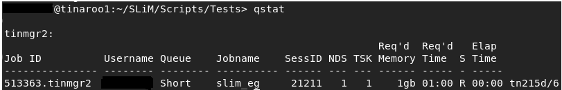
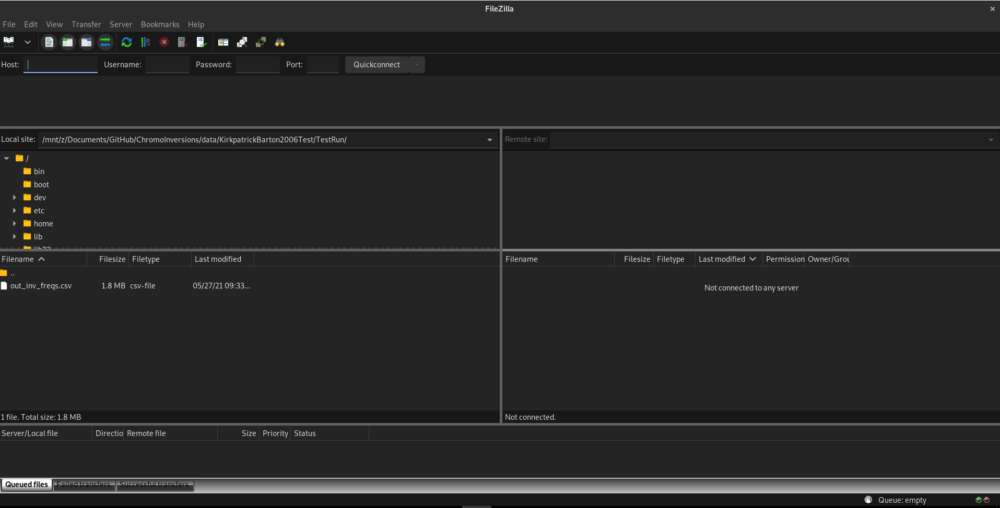

12 7.3 PBS Scripts
A PBS script contains the instructions that the job scheduler will use to determine what we want our job to do. It is simply a bash script with some ‘directives’ at the start to instruct the scheduler on how many resources we want to use. The interactive job line is in itself a PBS script, with some directives. Here is an example of how you might run just one SLiM run from a PBS script alone.
#!/bin/bash -l
#PBS -q workq
#PBS -A your-account-string
#PBS -N slim_eg
#PBS -l walltime=24:00:00
#PBS -l select=1:ncpus=24:mem=120G
cd $TMPDIR
~/SLiM/slim ~/SLiM/Scripts/Tests/Example/SLiM/slim_example.slim
cat /$TMPDIR/slim_output.csv >> /30days/$USER/slim_output.csvAs you can see, the script is split into two sections: the instructions for the scheduler, and the script/job itself.
-q defines the queue you want your job put into. On Tinaroo, workq is the default, however this will be different on
other systems. Generally, keeping it as the default is fine, but information on when to change your queue can be found
in your HPC’s documentation, which may or may not have access restricted to university
networks.
-N gives your job a name for easier identification when running many jobs at once. The other flags have been explained
with the interactive job.
The first instruction of our job is to change our working directory to $TMPDIR, which is the local storage on the node you
are working on. After each job finishes, this storage is wiped, so it is temporary and unique to every job. We do this because
writing files directly to shared drives can be taxing on the system and disrupt other users. We then invoke a call to slim,
running a script, and then we copy the output file to more permanent storage.
To queue a job, use the qsub command:
cd ~/home/$USER/SLiM/Scripts/Tests/Example/PBS
qsub example_job.pbsYou’ll get a message like telling you your job id number, and the PBS manager handling it.
If you enter qstat you’ll get a list of all your queued and running jobs:

This screen tells you the status of your job (R for running, Q for queued, X for finished), as well as its name, queue,
resource requirements, etc.
This command has a lot of flags that vary its output, so I’d suggest reading through them using man qstat.
After a job has finished, it will leave behind two files, one for standard output, and one for standard error. If your job crashes,
usually found out by if it finishes instantly, or far sooner than expected, then you should have a look at these files to see
what went wrong. This are saved in the same directory that you ran the qsub command from. In our example, we cd’d to …./example/PBS,
so our output will be there. The files will be named the same as your #PBS -N flag in your .pbs script, with file extensions .eXXXXX and .oXXXXX,
where XXXXX is your job’s id
number.
Now you could put any bash code in here - including our parallel SLiM in bash example from the previous chapter (6.3). However, I’d rather use R, so let’s do that:
#!/bin/bash -l
#PBS -q workq
#PBS -A qris-uq
#PBS -N slim_eg
#PBS -l walltime=24:00:00
#PBS -l select=1:ncpus=24:mem=120G
cd $TMPDIR
module load R/3.5.0
R --file=/home/$USER/SLiM/Scripts/Tests/Example/R/slim_sublauncher.R
cat /$TMPDIR/slim_output.csv >> /30days/$USER/slim_output.csvHere, we do the same as before, except we load a version of R, run it with a certain file, and use that R script to handle running SLiM. Let’s have a look at how that script looks:
##############################################################################################################
# Run SLiM in parallel
##############################################################################################################
# Parallel script modified from SLiM-Extras example R script, info at
# the SLiM-Extras repository at https://github.com/MesserLab/SLiM-Extras.
# Environment variables
USER <- Sys.getenv('USER')
# Parallelisation libraries
library(foreach)
library(doParallel)
library(future)
seeds <- read.csv(paste0("/home/",USER,"/SLiM/Scripts/Tests/Example/R/seeds.csv"), header = T)
combos <- read.csv(paste0("/home/",USER,"/SLiM/Scripts/Tests/Example/R/combos.csv"), header = T)
cl <- makeCluster(future::availableCores())
registerDoParallel(cl)
#Run SLiM
foreach(i=1:nrow(combos)) %:%
foreach(j=seeds$Seed) %dopar% {
# Use string manipulation functions to configure the command line args, feeding from a data frame of seeds
# then run SLiM with system(),
slim_out <- system(sprintf("/home/$USER/SLiM/slim -s %s -d param1=%f -d param2=%f -d modelindex=%i /home/$USER/SLiM/Scripts/Tests/Example/slim/slim_example.slim",
as.character(j), combos[i,]$param1, combos[i,]$param2, i, intern=T))
}
stopCluster(cl)This should be pretty familiar to those who read Chapter 6.4. The only real difference is we get an environment variable from
the HPC, $USER, which we use to access some HPC directories. You may notice however, that we haven’t copied across the .csv files from which
our seeds and combos are taken! To do this, open up FileZilla:

At the top left, you’ll see a quickconnect bar. Enter the following under each option:
- Host: sftp://tinaroo.rcc.uq.edu.au
- Username: Your username
- Password: Your password
- Port: 22
When you click quickconnect, you’ll be greeted by another security message (‘do you trust to connect to this server’), and then you’ll be put through to Tinaroo. The left block is your home computer, the right block is Tinaroo’s filesystem. You can navigate on the left to your files (for example, where you have your combos.csv and seeds.csv files stored) and then on the right, navigate to where you want to put your files and drag and drop them into that folder:

Now when you run your job, you’ll have 24 cores instead of the \(<10\) of your local PC, which will make things a tad faster. But we’re still only using one node. We can access multiple nodes in a job and use many more cores at once. Which is exciting! Be excited!
12.1 7.4 Multi-node jobs
There are two types of multi-node jobs on Tinaroo, and some form of both should exist on most HPCs. The first, job arrays, is like simultaneously running a whole bunch of these PBS scripts separately and having each work on a subset of your inputs. For example, your first script would handle the first 10 seeds, the next would do the next 10 seeds, etc. Ordinarily, this would be a pain because you would need a lot of scripts to manage all of that. Fortunately, the PBS system handles this for you, and you only need one extra flag to be set in your PBS script. The next system is the Embedded Nimrod system, which uses a different approach: it assigns individual cores to do jobs as they become freed, irrespective of the node they belong to. This is much more powerful for large jobs, where the amount of wasted time between one SLiM run ending and the next beginning can accumulate.
12.1.1 7.4.1 Job array SLiM jobs
Job array jobs are very simple to set-up. A single line has to be added to the PBS Script:
#!/bin/bash -l
#PBS -q workq
#PBS -A qris-uq
#PBS -N slim_eg
#PBS -J 1-4
#PBS -l walltime=24:00:00
#PBS -l select=1:ncpus=24:mem=120G
cd $TMPDIR
module load R/3.5.0
R --file=/home/$USER/SLiM/Scripts/Tests/Example/R/slim_sublauncher.R
cat /$TMPDIR/slim_output.csv >> /30days/$USER/slim_output.csv#PBS -J 1-4 Is the key line here, where -J signifies a job array, and 1-4 is a vector of identifiers for each sub-job in the
array. These identifiers provide a new environment variable, $PBS_ARRAY_INDEX, which can be used to identify which node is in charge
of the current script. This can be loaded into R:
##############################################################################################################
# Run SLiM in parallel
##############################################################################################################
# Parallel script modified from SLiM-Extras example R script, info at
# the SLiM-Extras repository at https://github.com/MesserLab/SLiM-Extras.
# Environment variables
USER <- Sys.getenv('USER')
ARRAY_INDEX <- as.numeric(Sys.getenv('PBS_ARRAY_INDEX'))
# Parallelisation libraries
library(foreach)
library(doParallel)
library(future)
seeds <- read.csv(paste0("/home/",USER,"/SLiM/Scripts/Tests/Example/R/seeds.csv"), header = T)
combos <- read.csv(paste0("/home/",USER,"/SLiM/Scripts/Tests/Example/R/combos.csv"), header = T)
# Set which runs to do according to node
switch (ARR_INDEX,
{ combos <- combos[1:5,] },
{ combos <- combos[6:9,] },
{ combos <- combos[10:13,] },
{ combos <- combos[14:18,] }
)
cl <- makeCluster(future::availableCores())
registerDoParallel(cl)
#Run SLiM
foreach(i=1:nrow(combos)) %:%
foreach(j=seeds$Seed) %dopar% {
# Use string manipulation functions to configure the command line args, feeding from a data frame of seeds
# then run SLiM with system(),
slim_out <- system(sprintf("/home/$USER/SLiM/slim -s %s -d param1=%f -d param2=%f -d modelindex=%i /home/$USER/SLiM/Scripts/Tests/Example/slim/slim_example.slim",
as.character(j), combos[i,]$param1, combos[i,]$param2, i, intern=T))
}
stopCluster(cl)The R script loads in the array index, and uses that value in a switch statement to choose a certain number of rows. This way, the load of parameter combinations is spread across the nodes.
The job array method is good for smaller numbers of jobs, but there is some inefficiency with queueing a lot of subjobs. An alternative is to use Tinaroo’s Embedded Nimrod system, which treats each core across many nodes as an individual device for running a process on.
12.1.2 7.4.2 Embedded Nimrod SLiM jobs
To use Embedded Nimrod, we need to make some changes to both our R script and PBS script. In fact, our PBS isn’t even a .pbs anymore: it’s a .nsh.
#!/sw7/RCC/NimrodG/embedded-1.9.0/bin/nimexec
# Modified from original script by david.green@uq.edu.au
# More information at: https://github.com/UQ-RCC/nimrod-embedded
#
# Submit this script as a PBS job script using the PBSPro qsub command.
# The nimexec command will parse it into what is required.
# Fix up Account String
#PBS -A <your-account-string-here>
#
# Define resources: In this case, 40 nodes, 24 cores, 120GB per node
#PBS -l select=40:ncpus=24:mem=120GB:ompthreads=1
#PBS -l walltime=336:00:00
#
#Job name for ease of recognition
#PBS -N Nim_SLiMeg
#
# Queue
#PBS -q workq
# There are additional directives for Nimrod to interpret with #NIM at the start of each line.
# Tell Nimrod to use this as the shell for the job proper when it has parsed this file.
#NIM shebang /bin/bash
# =============================================================================
# Tell Nimrod what range of parameter values you want to use "1 to 1638 step 1"
# =============================================================================
# The parameters for the 100 parameter combinations are rows in the input file.
#NIM parameter PAR integer range from 1 to 100 step 1
# Repeat 50 times for each combination with a different SEED value
#NIM parameter SEED integer range from 1 to 50 step 1
# Just checking that something did not go wrong with assignment of the J values.
if [ -z "${NIMROD_VAR_PAR}" ]; then
echo "\$NIMROD_VAR_PAR isn't set, cannot continue..."
exit 2
fi
if [ -z "${NIMROD_VAR_SEED}" ]; then
echo "\$NIMROD_VAR_SEED isn't set, cannot continue..."
exit 2
fi
#Where you submit this job from will be the value of $PBS_O_WORKDIR
echo "PBS_O_WORKDIR is ${PBS_O_WORKDIR}"
#Everything you need should be located relative to PBS_O_WORKDIR, or else a full path
#Set the cd to TMPDIR for writing SLiM output
cd ${TMPDIR}
#=====================
#Modify these to suit.
#=====================
# Always run the entire parameter range cause nimrod can do them in any order.
# See the -f test below about skipping the ones we have already done.
RUNNAME="nim_sublauncher"
OUTFILE="${PBS_O_WORKDIR}/Outputs/TEST_${NIMROD_VAR_PAR}_${NIMROD_VAR_SEED}.txt"
touch "${OUTFILE}"
if [ -f ${OUTFILE} ]; then
echo "Output file ${OUTFILE} already exists. Skipping this index value ${NIMROD_VAR_LS} ${NIMROD_VAR_SEED}"
exit 0
fi
mkdir -p ./matrices/model${NIMROD_VAR_LS}
RSCRIPTNAME="${PBS_O_WORKDIR}/R/${RUNNAME}.R"
# Get rid of any residually loaded modules and load R
module purge
module load R/3.5.0-gnu
Rscript $RSCRIPTNAME ${NIMROD_VAR_SEED} ${NIMROD_VAR_PAR}
cat /${TMPDIR}/slim_output.csv >> /30days/${USER}/slim_output.csvObviously a bit more involved, so lets go through it:
The start of the script is pretty similar to a regular PBS script: you specify how many resources you want, give a job name, etc.
The only difference is the addition of an ompthreads parameter in your list of resources. ompthreads is a specifier
for how many cores you want each ‘subjob’ to have access to. SLiM is single-threaded, so it only needs 1 core to run, so
you should set this to 1. If you were using some other program which used 4 cores, and you needed to run that in parallel,
you would use ompthreads=4, and make sure that the total number of cores you request is divisible by 4.
Following the familiar part, is everything else. We use #NIM parameter to set the parameters we are iterating over. In this case, we
have 100 rows of an input parameter combinations list, so we are going from 1 to 100. We also have 50 seeds which we want to interate
over, so we set that as a second Nimrod parameter. We have an error checking section to make sure these parameters have been set correctly,
and then we go to running SLiM. First, we write empty output files (touch "${OUTFILE}"), which is done in case the Nimrod
system misses some of the runs. If this happens (and it does), you can run the same script again, the Nimrod system will identify which
runs have already been done, skip those, and only do the ones it missed the first time around. Then we go back to familiar territory, with
using the bash script to sublaunch SLiM from R.
This section is very similar to the PBS script, however we have defined some script names as variables rather than using direct filepaths.
For example, RSCRIPTNAME="${PBS_O_WORKDIR}/R/${RUNNAME}.R" is essentially the same as doing
/home/$USER/SLiM/Scripts/Tests/Example/R/slim_sublauncher.R.
Here, instead of R file=..., we run Rscript, which allows us to feed in environment variables directly: we can use these variables
to tell R which parameter combination and seed to run for. This Rscript will run for each and every run that happens, with a different
combination of NIMROD_VAR_SEED AND NIMROD_VAR_PAR. Lets have a look at how the R script works:
##############################################################################################################
# Example SLiM sublauncher in R, using Tinaroo's Embedded Nimrod system #
##############################################################################################################
# Parallel script modified from SLiM-Extras example R script, info at
# the SLiM-Extras repository at https://github.com/MesserLab/SLiM-Extras.
# Thanks to David Green (david.green@uq.edu.au) for getting this to work on Nimrod
# NEED TO PROCESS 2 PARAMETERS PASSED IN REPEAT(i.e. SEED) and COMBOS ROW NUMBER
args <- commandArgs(trailingOnly = TRUE)
if ( length(args) < 2 ) {
cat("Need 2 command line parameters i.e. SEED, PAR\n")
q()
}
row_seed <- as.numeric(args[1])
row_combo <- as.numeric(args[2])
# Environment variables
USER <- Sys.getenv('USER')
# Load LHS samples - Production run is 100 samples, 50 seeds
seeds <- read.csv(paste0("/home/",USER,"/SLiM/Scripts/Tests/Example/R/seeds.csv"), header = T)
combos <- read.csv(paste0("/home/",USER,"/SLiM/Scripts/Tests/Example/R/combos.csv"), header = T)
#Run SLiM, defining parameter sets according to LHC samples in command line
# 8 Parameters for Aim 1 and 2, 9 for Aim 3 (wsd):
# Ne, rwide, pleio_cov, pleiorate, delmu, nloci, locisigma, delchr, wsd
i <- row_seed
j <- row_combo
slim_out <- system(sprintf("/home/$USER/SLiM/slim -s %s -d param1=%f -d param2=%f -d modelindex=%i /home/$USER/SLiM/Scripts/Tests/Example/slim/slim_example.slim",
as.character(seeds$Seed[i]), combos[j,]$param1, combos[j,]$param2, j, intern=T))Very familiar, but there’s no for loop. R isn’t handling any parallelism in Nimrod. Each SLiM job will run its own one of these R scripts, with its own unique combination of seeds and combos.